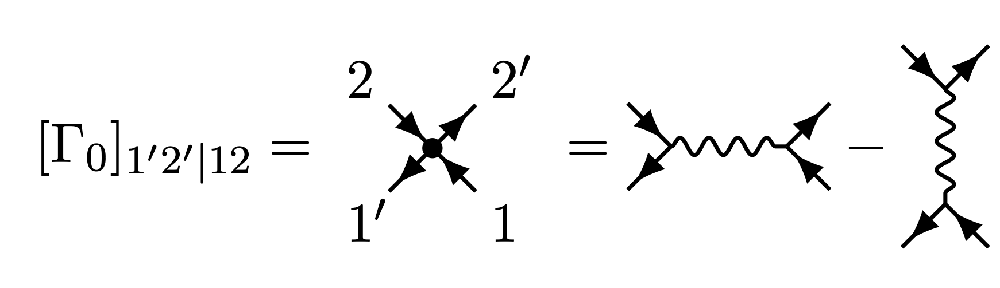

Conventions for real-frequency quantum field theory in the Keldysh formalism, as used in 1 2 3 4.
The multi-indices comprise all dependencies of the Grassmann variables, i.e., time, Keldysh contour index, spin, and all other dependencies and quantum numbers there might be. Einstein summation convention is used. Contracting time and Keldysh indices thus means an integration along the Keldysh contour.
where $h_{1’\mid 1}$ is extracted from the single-particle Hamiltonian, $H_0[\overline{c},c] = \bar{c} h_{1’\mid 1} c_1$.

In terms of explicit Keldysh contour indices $j$, spin indices $\sigma$, and time indices $t$, where the indices $q$ shall label all other indices there might be, the bare interaction reads
\[[\Gamma_0]^{j_{1'}j_{2'}|j_1 j_2}_{\sigma_{1'}\sigma_{2'}|\sigma_1 \sigma_2}(t_{1'},t_{2'}|t_1,t_2 ; q_{1'},q_{2'}|q_1 q_2) = -j_1 \delta_{j_{1'}=j_{2'}=j_{1}=j_{2}} \delta(t_{1'}=t_{2'}=t_{1}=t_{2}) (\delta_{\sigma_{1'},\sigma_2}\delta_{\sigma_{2'},\sigma_1} - \delta_{\sigma_{1'},\sigma_1}\delta_{\sigma_{2'},\sigma_2}) [\Gamma_0](q_{1'},q_{2'}|q_1 q_2)\, .\]with the non-interacting partition function $\mathcal{Z}_0 = \int \mathcal{D}[\overline{c},c]\, e^{iS_0[\overline{c},c]}$.
Can be decomposed by employing the tree expansion,
\[i G^{(4)}_{12|1'2'} = G_{1|1'} G_{2|2'} - G_{1|2'} G_{2|1'} + i G^{(4)}_{c;\,12|1'2'}\, ,\]yielding the connected contribution,
\[G^{(4)}_{c;\,12|1'2'} = - G_{1|3'} G_{2|4'} \Gamma_{3'4'|34} G_{3|1'} G_{4|2'}\,\]which involves the four-point vertex $\Gamma$.
Elias Walter, Ph.D. Thesis, LMU Munich, 2022 ↩
Ge et al., Real-frequency quantum field theory applied to the single-impurity Anderson model, PRB, 2024 ↩
Ritz et al., KeldyshQFT: A C++ codebase for real-frequency multiloop functional renormalization group and parquet computations of the single-impurity Anderson mode, JCP, 2024 ↩
Ritz et al., Testing the parquet equations and the U(1) Ward identity for real-frequency correlation functions from the multipoint numerical renormalization group, arXiv, 2025 ↩